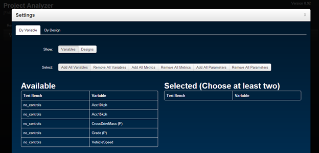

The parallel axes plot allows a user to see many designs (lines) across each, and every variable (axes) all at once. It is a useful way of visualizing data with respect to many dimensions, or variables. Each axis can be filtered using a brush function. This is done by clicking (left click) on a value axis value desired (either the maximum, or the minimum), drag towards the value desired, and then releasing the mouse. A white brushing rectangle should appear from the initial value to the final value. Notice few things happen:
If you'd like to clear the brush, click outside of the brushed area. To set multiple criteria, multiple variables can be brushed, too. If a design meets the brushed variables, then it'll be toggled blue.
If you'd like to know the name of the design (the design ID), simply hover the mouse over it. It doesn't matter of the design is selected or not.
One of the key strengths of the parallel axes plot, is that trends between variables are apparent.
A few notes on how to use the parallel axes plot and its features:
A few suggestions:
The Multivariate plot shows the same information as the parallel plot does, but in a different way. Each metric is plotted in against another variables, allowing users to identify trends two variables at a time. Upon quick inspection a few characteristics about the Multivariate plot stand out:
To read the Multivariate plot properly, notice the name of the variable and testbench from the diagonal. If the plots to the left and right are read, the variable's values are along the vertical axis for all plots left and right. Notice the name of another variable along the diagonal. If the plot is followed up and down, the variable's values are along the horizontal axis for all plots up and down. Essentially, you'll form a "cross-hair" between two variables of interest. This can be done for any variables of interest.
The Multivariate plot also allows brushing between two variables plotted against each other. Brushing within the plot itself occurs real-time, meaning if the plot of two variables is brushed, the only designs that fall within the filter are displayed along all the other dimensions.
A few notes on how to use the parallel axes plot and its features:
This table is perhaps the easiest to read. Upon page loading, all designs are loaded, along with its chosen variables. Hovering over a row will highlight it, making it easier to read.
A few notes on how to use the parallel axes plot and its features:
The Multivariate plot shows the same information as the parallel plot does, but in a different way. Each metric is plotted in against another variables, allowing users to identify trends two variables at a time. Upon quick inspection a few characteristics about the Multivariate plot stand out:
To read the Multivariate plot properly, notice the name of the variable and testbench from the diagonal. If the plots to the left and right are read, the variable's values are along the vertical axis for all plots left and right. Notice the name of another variable along the diagonal. If the plot is followed up and down, the variable's values are along the horizontal axis for all plots up and down. Essentially, you'll form a "cross-hair" between two variables of interest. This can be done for any variables of interest.
The Multivariate plot also allows brushing between two variables plotted against each other. Brushing within the plot itself occurs real-time, meaning if the plot of two variables is brushed, the only designs that fall within the filter are displayed along all the other dimensions.
A few notes on how to use the parallel axes plot and its features:
The Design Space Analysis tab consists of three widgets: the Parallel Axes Plot, the Multivariate Plot, and the Selected Design Table. Each plot will be individually covered and then how to use them together. This tab allows the user to analyze trends, view all designs against each other, view data in multiple dimensions, and allow for filtering designs based on variable filter settings.
When the tab is first clicked, a blue Settings window will appear.

This window allows you to select what variables or designs to view. If you would like to select which variables to view, note that only designs that have all the selected variables will be plotted. In other words, if you have a design called "Design123" that contains "var1", "var2", and "var3", and another design "Design456" that has the same variables, but one more called "var4", selecting "var1" and "var4" from the list will result in "Design456" begin displayed. This can be checked afterwards on the Selected Designs table on the bottom of the page after clicking "OK" on the Settings window.
If you would like to select designs to view instead, click "By Designs" and then the Designs button
Any variables or designs selected from the Available table will automatically be removed from the Available table and be placed under the Selected table and vice versa.
Once all variables or designs have been selected, click "OK" to proceed. Note: if "X" is clicked instead, your changes will not be saved.
If at any point you would like to change the variables or designs chosen, the Settings window can be revisited.
Using all the widgets available on this tab, here are a few notes: